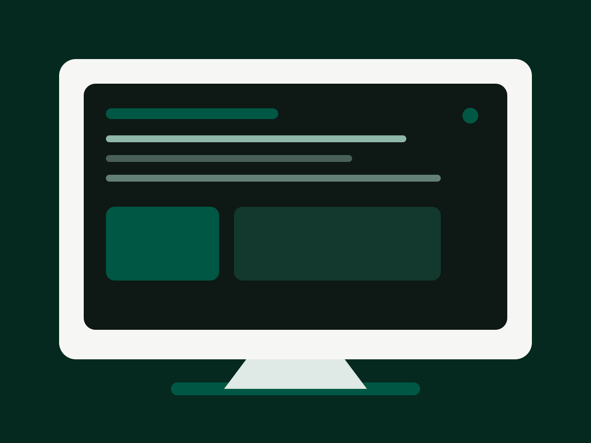
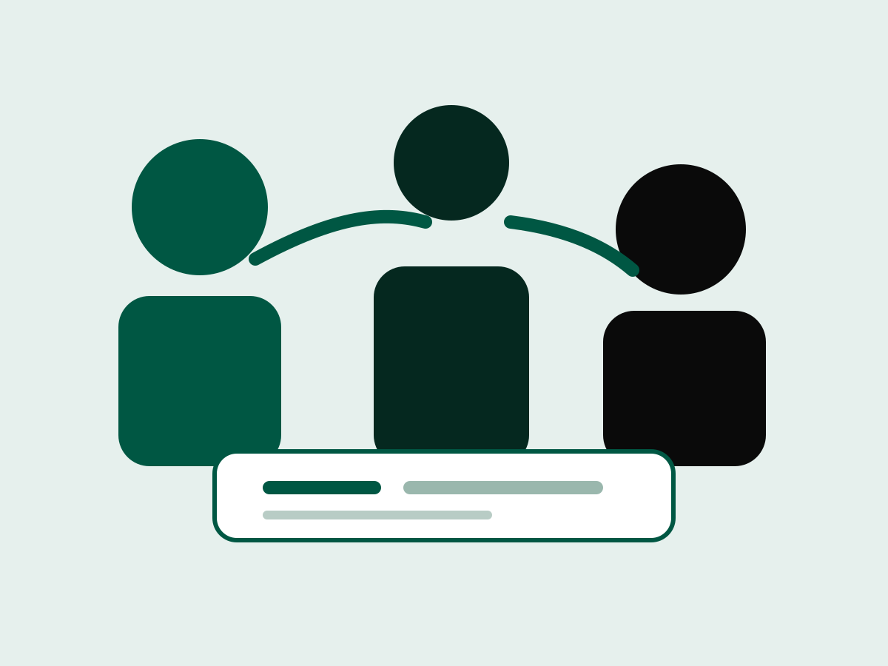
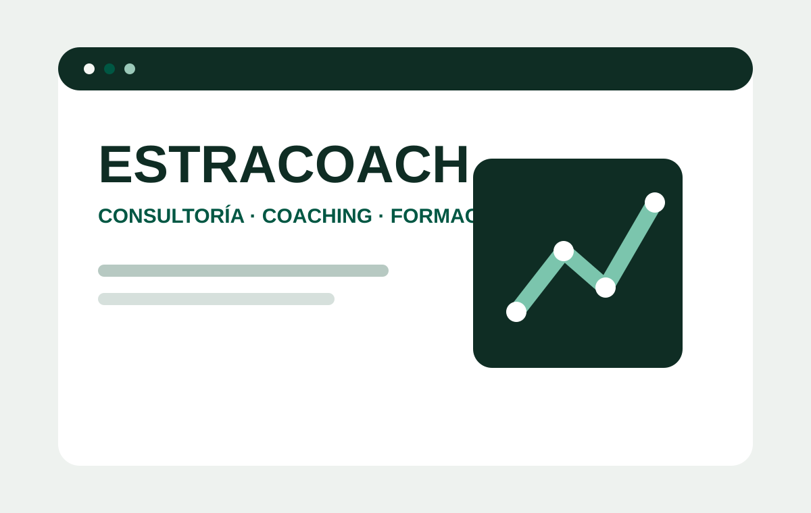
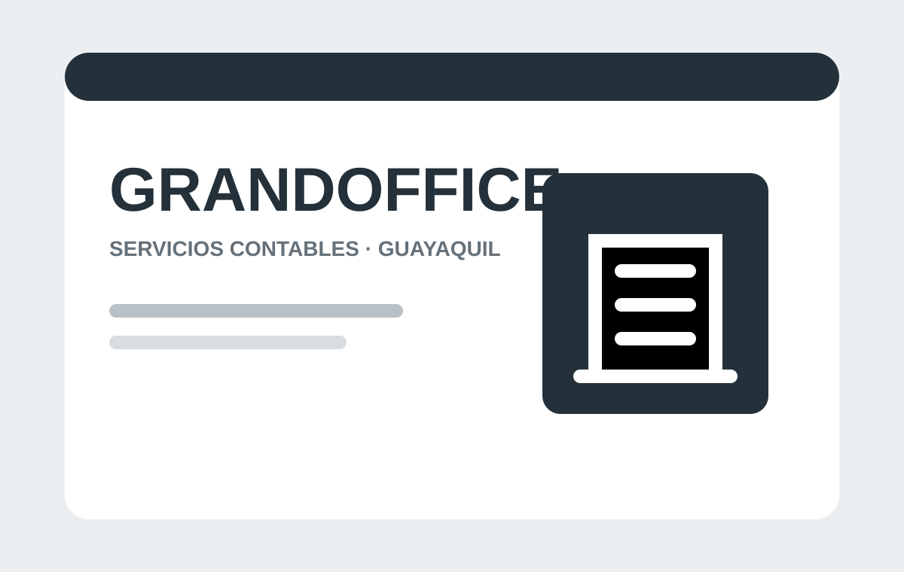
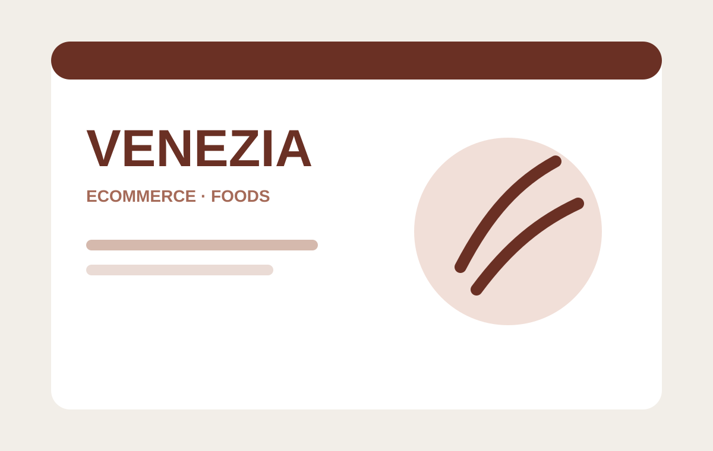
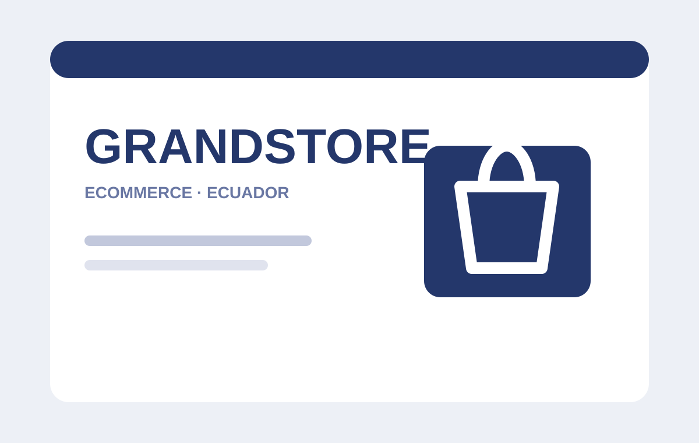
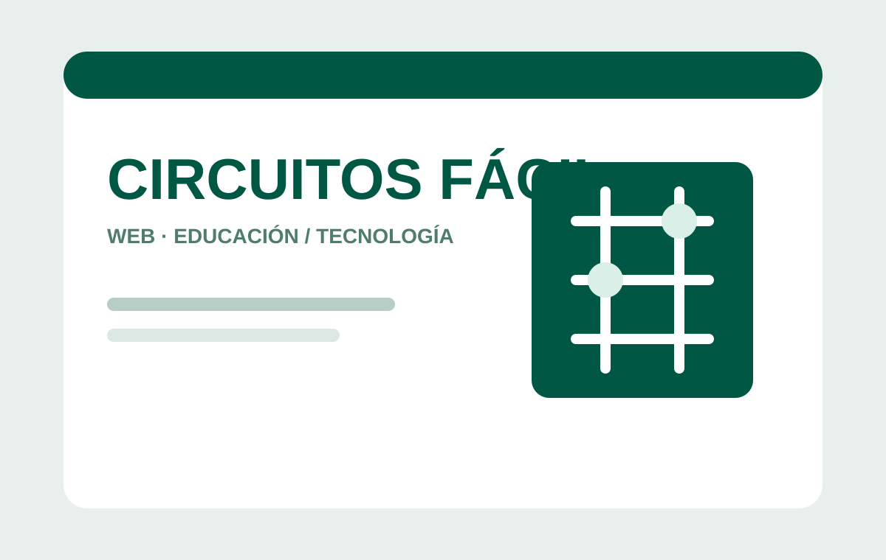
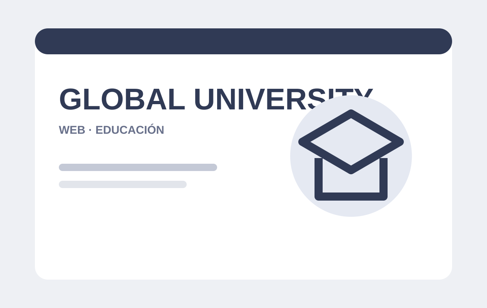
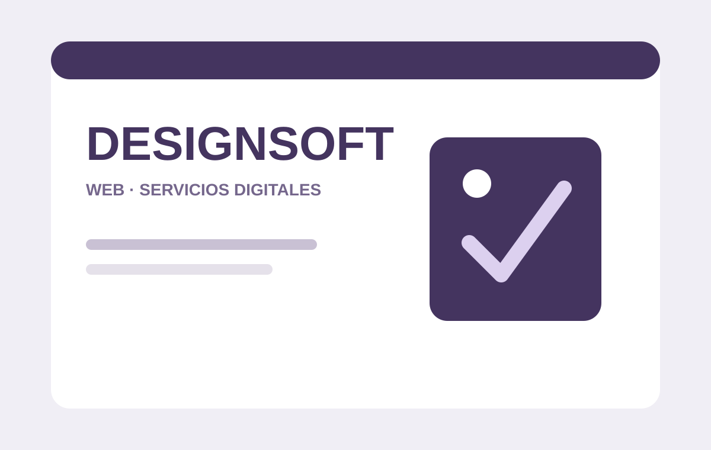

Desarrollo web
Sitios corporativos, landing pages, catálogos, portafolios y experiencias web adaptadas al objetivo de cada negocio.
- Responsive
- SEO técnico base
- Optimización
ECUADOR · ESTUDIO DIGITAL · DESDE 2019
Creamos sitios web, soluciones a medida e infraestructura digital para que pequeñas empresas, negocios y proyectos puedan crecer con una presencia digital profesional, útil y sostenible.

Construimos capacidad digital.
NUESTRA FORMA DE TRABAJO
CAPACIDADES
No se trata solamente de publicar una página. Diseñamos una solución completa, desde la idea y la experiencia visual hasta el dominio, correo corporativo y continuidad técnica.
Sitios corporativos, landing pages, catálogos, portafolios y experiencias web adaptadas al objetivo de cada negocio.
Herramientas, automatizaciones, integraciones y soluciones web cuando un sitio convencional no es suficiente.
Infraestructura administrada para mantener tu web, dominio y servicios digitales disponibles y organizados.
Direcciones profesionales con tu propio dominio para fortalecer la identidad y credibilidad de tu negocio.
Mantenimiento, ajustes y acompañamiento para que tu activo digital siga evolucionando después del lanzamiento.

ALIADO DIGITAL
Futuro Digital nació para acercar herramientas profesionales a negocios y proyectos que necesitan dar el siguiente paso sin tener que convertirse primero en expertos en tecnología.
Conoce nuestra historia →PROYECTOS REALIZADOS
Desde sitios corporativos hasta comercio electrónico y soluciones digitales. Cada proyecto responde a una necesidad distinta y forma parte de la trayectoria de Futuro Digital.

Sitio corporativo para una empresa de reformas integrales, estructurado para comunicar servicios, generar confianza y facilitar solicitudes de presupuesto.

Presencia web desarrollada para Nutri Orgánicos del Campo, orientada a presentar su propuesta comercial y ofrecer un punto digital claro para clientes y consultas.

Experiencia web para una propuesta de consultoría, coaching y formación empresarial, con contenidos de servicios, escuela comercial, talleres y desarrollo profesional.
TRAYECTORIA
Una selección del portafolio histórico que muestra distintos tipos de negocio, necesidades y soluciones construidas a lo largo del tiempo.

Sitio web para Grand Advisors Office Grandoffice S.A., empresa de servicios contables de Guayaquil.

Proyecto de comercio electrónico desarrollado para Venezia Foods S.A.

Tienda online orientada a la presentación y comercialización de productos.

Proyecto web conservado dentro del portafolio de desarrollo y evolución de la marca.

Experiencia web desarrollada para una propuesta vinculada al ámbito educativo.

Proyecto web que forma parte del archivo profesional y del recorrido de desarrollo digital.
Los covers mostrados están alojados dentro del repositorio de Futuro Digital. Las capturas históricas originales permanecen conservadas en el portafolio personal y podrán sustituir estos covers cuando se exporten en formato optimizado.
PROCESO
Una metodología sencilla para que cada decisión tenga un propósito y el proyecto avance con una ruta visible.
Objetivos, negocio y prioridades.
Alcance, estructura y solución.
Experiencia e identidad visual.
Desarrollo, contenido y pruebas.
Publicación, soporte y evolución.
NUESTRA HISTORIA
Futuro Digital comenzó en 2019 como una iniciativa freelance orientada a desarrollar sitios web para pequeñas empresas, negocios y proyectos.
La pandemia provocó una pausa en el camino, pero no cambió la idea que dio origen a la marca: ayudar a que más negocios puedan aprovechar la tecnología y contar con una presencia digital profesional.
Con el tiempo, la propuesta evolucionó. Hoy no pensamos únicamente en sitios web: integramos desarrollo, hosting, dominios, correo corporativo, soporte y soluciones a medida para convertirnos en un aliado digital de largo plazo.
EMPECEMOS
Déjanos los datos básicos de tu proyecto. Esta demo todavía no envía información; en producción se conectará de forma segura desde el hosting.